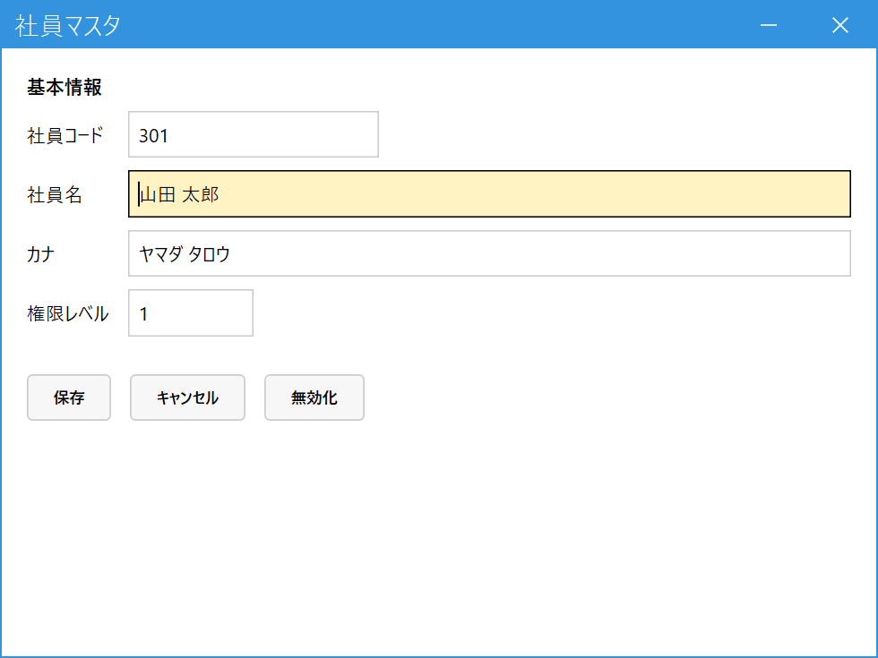

社員を登録する（管理者）
こんなときに使います
このシステムを使う社員を登録します。登録した社員コードで、どのメニューが使えるか（権限レベル）が決まります。
受注・売上の「担当者」にも、ここに登録した社員が使われます。
このシステムを使う社員を登録します。登録した社員コードで、どのメニューが使えるか（権限レベル）が決まります。
受注・売上の「担当者」にも、ここに登録した社員が使われます。
管理者専用の画面です。権限レベル9の社員にだけメニューに表示されます。
1.ログインのしくみ（先に知っておくこと）
このシステムには、ID・パスワードを入れるログイン画面がありません。デスクトップの起動用ショートカットに、その人の社員コードを指定して起動します。起動したときの社員コードから、権限レベルが判定されます。
- 社員マスタに無い社員コードで起動すると、メニューが空になります（警告が出ます）。
- 新しい社員が使い始めるには、社員を登録して、その人の社員コードで起動するショートカットを用意します。
2.社員を登録する
メインメニューの「マスタ管理」の中の「社員マスタ」を開きます。社員コードを入れて Enter（登録済みなら内容が出ます。未登録なら新規登録として入力を続けます）。

- 社員コード：必須。起動ショートカットに指定する番号です。
- 社員名・カナ：社員名は必須。伝票の担当者として画面や帳票に出ます。
- 権限レベル：数字が大きいほど使えるメニューが増えます。1＝一般（日々の業務）、9＝管理者（締め解除・社員マスタ・自社情報など）。メニューごとに必要なレベルが決まっていて、本人のレベル以上のメニューだけが表示されます。
- 保存で登録。やめた社員は無効化します（無効化した社員は、担当者として新しく指定できなくなります。過去の伝票は残ります）。